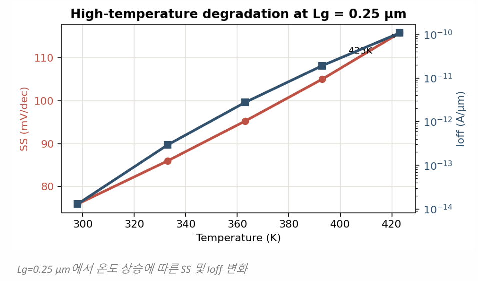
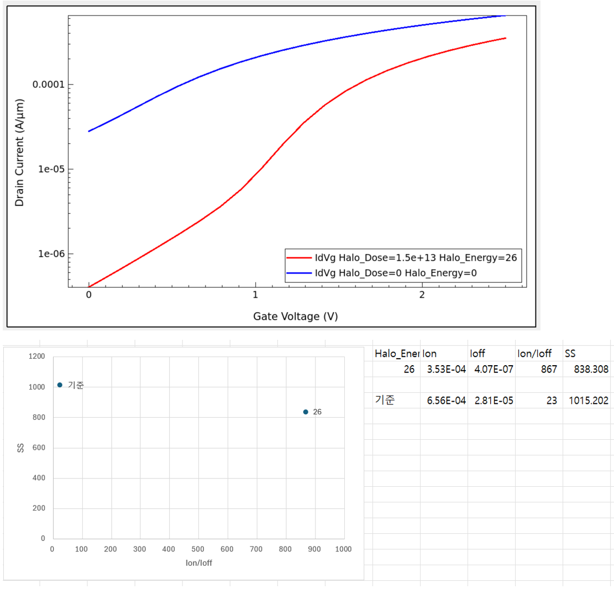
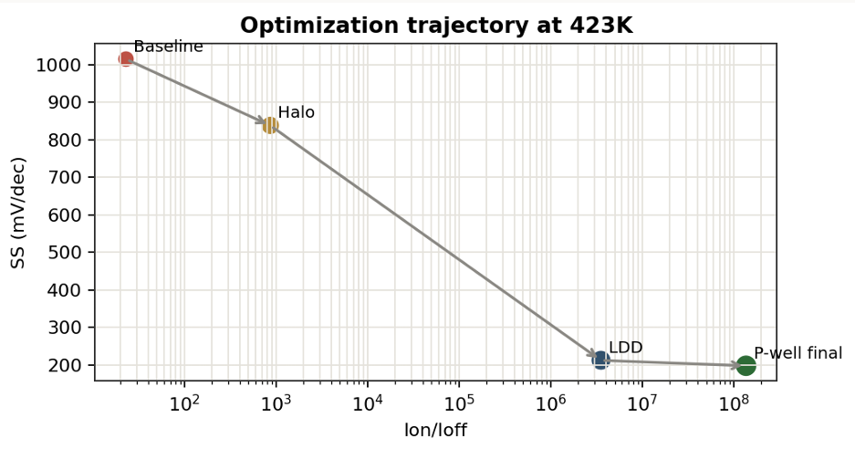
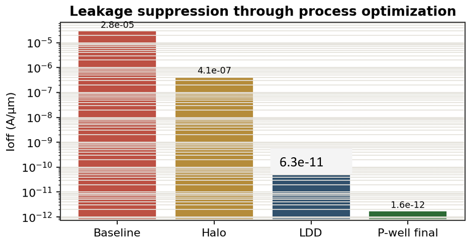

Temperature degradation
고온 조건에서 확인한 기준 소자의 특성 변화입니다.
423 K High-Temperature Process Optimization
423 K, gate length 0.12 µm 조건에서 단채널·고온 열화를 분석하고 Halo, LDD, P-well 공정을 순차적으로 조정한 4인 팀 프로젝트입니다.

01 / OVERVIEW
고온 동작과 0.12 µm gate length 조건에서 기준 소자의 SS와 누설전류가 악화되었습니다. 팀은 전류 구동력을 유지하면서 Ioff와 단채널 효과를 줄이는 방향으로 공정 변수를 분담해 분석했습니다.
02 / METHOD
기준 소자를 423 K에서 평가해 열화된 I–V 특성을 확인했습니다.
Halo, LDD, P-well 변수의 구조·전기적 영향을 순차적으로 비교했습니다.
단계별 최적 조건을 통합하고 최종 구조와 지표를 재검증했습니다.

고온 조건에서 확인한 기준 소자의 특성 변화입니다.

순차 최적화를 통합한 최종 소자 구조입니다.
03 / RESULTS
Final SS · baseline 1015.2 mV/dec, 80.4% decrease
Final Ioff · baseline 2.81 × 10⁻⁵, about 7 orders lower
Final Ion/Ioff · baseline 23, about 6 × 10⁶ improvement

기준 구조와 최종 구조의 전기적 특성 비교입니다.

고온 조건에서의 최종 성능 지표를 검증했습니다.
04 / FILES
README와 프로젝트 기술 자료
VIEW GITHUB REPOSITORY ↗공정 최적화 방법과 최종 결과 보고서
VIEW FINAL REPORT ↗팀 프로젝트 최종 발표 자료
VIEW PRESENTATION PDF ↗